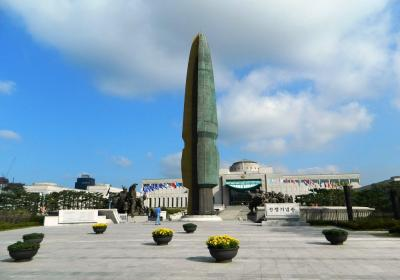

Seoul has an abundance of beatiful and impressive monuments, many of them of not most are closely related to either Religion, Political conflicts (wars and war heroes) and Popular Culture.
One of the darkest phases in the history of this country is extremely well documented in this museum located in the Yongsan-dong area of Seoul.
